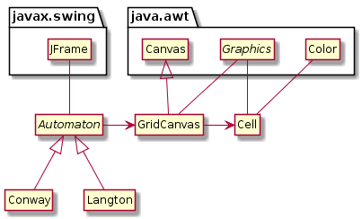

18 Reusing Classes
In Chapter 15, we developed classes to implement Conway’s Game of Life. We can reuse the Cell and GridCanvas classes to implement other simulations. One of the most interesting zero-player games is Langton’s Ant, which models an “ant” that walks around a grid. The ant follows only two simple rules:
If the ant is on a white cell, it turns to the right, makes the cell black, and moves forward.
If the ant is on a black cell, it turns to the left, makes the cell white, and moves forward.
Because the rules are simple, you might expect the ant to do something simple, like make a square or repeat a simple pattern. But starting on a grid with all white cells, the ant makes more than 10,000 steps in a seemingly random pattern before it settles into a repeating loop of 104 steps. You can read more about it at https://en.wikipedia.org/wiki/Langton's_ant.
In this chapter, we present an implementation of Langton’s Ant and use it to demonstrate more advanced object-oriented techniques.
18.1 Langton’s Ant
We begin by defining a Langton class that has a grid and information about the ant. The constructor takes the grid dimensions as parameters:
public class Langton {
private GridCanvas grid;
private int xpos;
private int ypos;
private int head; // 0=North, 1=East, 2=South, 3=West
public Langton(int rows, int cols) {
grid = new GridCanvas(rows, cols, 10);
xpos = rows / 2;
ypos = cols / 2;
head = 0;
}
}grid is a GridCanvas object, which represents the state of the cells. xpos and ypos are the coordinates of the ant, and head is the “heading” of the ant; that is, which direction it is facing. head is an integer with four possible values, where 0 means the ant is facing “north” (i.e., toward the top of the screen), 1 means “east”, etc.
Here’s an update method that implements the rules for Langton’s Ant:
public void update() {
flipCell();
moveAnt();
}The flipCell method gets the Cell at the ant’s location, figures out which way to turn, and changes the state of the cell:
private void flipCell() {
Cell cell = grid.getCell(xpos, ypos);
if (cell.isOff()) {
head = (head + 1) % 4; // turn right
cell.turnOn();
} else {
head = (head + 3) % 4; // turn left
cell.turnOff();
}
}We use the remainder operator, %, to make head wrap around: if head is 3 and we turn right, it wraps around to 0; if head is 0 and we turn left, it wraps around to 3.
Notice that to turn right, we add 1 to head. To turn left, we could subtract 1, but -1 % 4 is -1 in Java. So we add 3 instead, since one left turn is the same as three right turns.
The moveAnt method moves the ant forward one square, using head to determine which way is forward:
private void moveAnt() {
if (head == 0) {
ypos -= 1;
} else if (head == 1) {
xpos += 1;
} else if (head == 2) {
ypos += 1;
} else {
xpos -= 1;
}
}Here is the main method we use to create and display the Langton object:
public static void main(String[] args) {
String title = "Langton's Ant";
Langton game = new Langton(61, 61);
JFrame frame = new JFrame(title);
frame.setDefaultCloseOperation(JFrame.EXIT_ON_CLOSE);
frame.setResizable(false);
frame.add(game.grid);
frame.pack();
frame.setVisible(true);
game.mainloop();
}Most of this code is the same as the main we used to create and run Conway, in Section 15.6. It creates and configures a JFrame and runs mainloop.
And that’s everything! If you run this code with a grid size of 61 x 61 or larger, you will see the ant eventually settle into a repeating pattern.
Because we designed Cell and GridCanvas to be reusable, we didn’t have to modify them at all. However, we now have two copies of main and mainloop—one in Conway, and one in Langton.
18.2 Refactoring
Whenever you see repeated code like main, you should think about ways to remove it. In Chapter 14, we used inheritance to eliminate repeated code. We’ll do something similar with Conway and Langton.
First, we define a superclass named Automaton, in which we will put the code that Conway and Langton have in common:
public class Automaton {
private GridCanvas grid;
public void run(String title, int rate) {
JFrame frame = new JFrame(title);
frame.setDefaultCloseOperation(JFrame.EXIT_ON_CLOSE);
frame.setResizable(false);
frame.add(this.grid);
frame.pack();
frame.setVisible(true);
this.mainloop(rate);
}
}Automaton declares grid as an instance variable, so every Automaton “has a” GridCanvas. It also provides run, which contains the code that creates and configures the JFrame.
The run method takes two parameters: the window title and the frame rate; that is, the number of time steps to show per second. It uses title when creating the JFrame, and it passes rate to mainloop:
private void mainloop(int rate) {
while (true) {
// update the drawing
this.update();
grid.repaint();
// delay the simulation
try {
Thread.sleep(1000 / rate);
} catch (InterruptedException e) {
// do nothing
}
}
}mainloop contains the code you first saw in Section 15.7. It runs a while loop forever (or until the window closes). Each time through the loop, it runs update to update grid and then repaint to redraw the grid.
Then it calls Thread.sleep with a delay that depends on rate. For example, if rate is 2, we should draw two frames per second, so the delay is a half second, or 500 milliseconds.
This process of reorganizing existing code, without changing its behavior, is known as refactoring. We’re almost finished; we just need to redesign Conway and Langton to extend Automaton.
18.3 Abstract Classes
If we were not planning to implement any other zero-person games, we could leave well enough alone. But there are a few problems with the current design:
The
gridattribute isprivate, making it inaccessible inConwayandLangton. We could make itpublic, but then other (unrelated) classes would have access to it as well.The
Automatonclass has no constructors, and even if it did, there would be no reason to create an instance of this class.The
Automatonclass does not provide an implementation ofupdate. In order to work properly, subclasses need to provide one.
Java provides language features to solve these problems:
We can make the
gridattributeprotected, which means it’s accessible to subclasses but not other classes.We can make the class
abstract, which means it cannot be instantiated. If you attempt to create an object for an abstract class, you will get a compiler error.We can declare
updateas anabstractmethod, meaning that it must be overridden in subclasses. If the subclass does not override an abstract method, you will get a compiler error.
Here’s what Automaton looks like as an abstract class (using the methods mainloop and run from Section 16.2):
public abstract class Automaton {
protected GridCanvas grid;
public abstract void update();
private void mainloop(int rate) {
// this method invokes update
}
public void run(String title, int rate) {
// this method invokes mainloop
}
}Notice that the update method has no body. The declaration specifies the name, arguments, and return type. But it does not provide an implementation, because it is an abstract method.
Notice also the word abstract on the first line, which declares that Automaton is an abstract class. In order to have any abstract methods, a class must be declared as abstract.
Any class that extends Automaton must provide an implementation of update; the declaration here allows the compiler to check.
Here’s what Conway looks like as a subclass of Automaton:
public class Conway extends Automaton {
// same methods as before, except mainloop is removed
public static void main(String[] args) {
String title = "Conway's Game of Life";
Conway game = new Conway();
game.run(title, 2);
}
}Conway extends Automaton, so it inherits the protected instance variable grid and the methods mainloop and run. But because Automaton is abstract, Conway has to provide update and a constructor (which it has already).
Abstract classes are essentially “incomplete” class definitions that specify methods to be implemented by subclasses. But they also provide attributes and methods to be inherited, thus eliminating repeated code.
18.4 UML Diagram
At the beginning of the chapter, we had three classes: Cell, GridCanvas, and Conway. We then developed Langton, which had almost the same main and mainloop methods as Conway. So we refactored the code and created Automaton. Figure 16.1 summarizes the final design.

Conway and Langton applications.
The diagram shows three examples of inheritance: Conway is an Automaton, Langton is an Automaton, and GridCanvas is a Canvas. It also shows two examples of composition: Automaton has a GridCanvas, and GridCanvas has a 2D array of Cells.
The diagram also shows that Automaton uses JFrame, GridCanvas uses Graphics, and Cell uses Graphics and Color.
Automaton is in italics to indicate that it is an abstract class. As it happens, Graphics is an abstract class, too.
Conway and Langton are concrete classes, because they provide an implementation for all of their methods. In particular, they implement the update method that was declared abstract in Automaton.
One of the challenges of object-oriented programming is keeping track of a large number of classes and the relationships between them. UML class diagrams can help.
18.5 Vocabulary
- refactor:
-
To restructure or reorganize existing source code without changing its behavior.
- abstract class:
-
A class that is declared as
abstract; it cannot be instantiated, and it may (or may not) include abstract methods. - concrete class:
-
A class that is not declared as
abstract; each of its methods must have an implementation.
18.6 Exercises
The code for this chapter is in the ch16 directory of ThinkJavaCode2. See page for instructions on how to download the repository. Before you start the exercises, we recommend that you compile and run the examples.
Exercise 16.1. The last section of this chapter introduced Automaton as an abstract class and rewrote Conway as a subclass of Automaton. Now it’s your turn: rewrite Langton as a subclass of Automaton, removing the code that’s no longer needed.
Exercise 16.2. Mathematically speaking, Game of Life and Langton’s Ant are cellular automata. “Cellular” means it has cells, and “automaton” means it runs itself. See https://en.wikipedia.org/wiki/Cellular_automaton for more discussion.
Implement another cellular automaton of your choice. You may have to modify Cell and/or GridCanvas, in addition to extending Automaton. For example, Brian’s Brain (https://en.wikipedia.org/wiki/Brian's_Brain) requires three states: “on”, “dying”, and “off”.